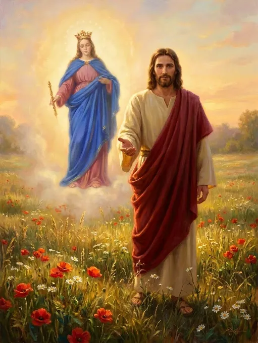

Lectura bíblica
Lectura del Evangelio según San Juan 15, 16-17
No son ustedes los que me eligieron a mí, sino yo el que los elegí a ustedes, y los destiné para que vayan y den fruto, y ese fruto sea duradero. Así todo lo que pidan al Padre en mi Nombre, él se lo concederá. Lo que yo les mando es que se amen los unos a los otros.
Meditación
Nos relata el libro del Génesis que Dios nos creó a su “ imagen y semejanza ” (Gn 1,26), es decir nos creó para vivir en comunión con Él en santidad y amor; pero “ el hombre, tentado por el diablo, dejó morir en su corazón la confianza hacia su creador (cf. Gn 3,1-11) y, abusando de su libertad, desobedeció al mandamiento de Dios. En esto consistió el primer pecado del hombre (cf. Rm 5,19). En adelante, todo pecado será una desobediencia a Dios y una falta de confianza en su bondad, hiriéndonos en el núcleo de nuestra relación con Dios ” (CIC 397). “La Escritura muestralas consecue ncias dramáticas de esta primera desobediencia. Adán y Eva pierden inmediatamente la gracia de la santidad original (cf. Rm 3,23). Tienen miedo del Dios (cf. Gn 3,9-10) de quien han concebido una falsa imagen, la de un Dios celoso de sus prerrogativas (cf. Gn 3,5)” (CIC 399). Sin embargo "Dios, que es rico en misericordia, por el grande amor con que nos amó, estando muertos a causa de nuestros delitos, nos vivificó juntamente con Cristo" (Ef. 2,4-5). Esta misericordia por la cual Dios ha venido a nuestro en cuentro, fue acogida de manera plena por la Santísima Virgen María, pues en ella, la Inmaculada, “el Verbo se hizo carne” (Jn. 1,14). Hemos sido llamados por Jesús para estar con Él, de tal manera que las heridas que nos ha producido el pecado sean curadas, y la imagen según la cual fuimos creados restaurada. Para ello se ha valido de su Madre Santísima, quien nos congrega continuamente en torno a Él, para enseñarnos a amarle como solo ella lo ha sabido hacer. Ella nos conduce con delicadeza maternal al en cuentro íntimo con la Misericordia del Padre, a través de su Hijo por la acción del Espíritu Santo. Este encuentro de amor ha de llevarnos a experimentar un anhelo constante de conversión, de tal manera que la desconfianza en Dios sea transformada por una confianza robusta y sin límites, que nos llevará a amarle íntima y profundamente. Este llamado a la conversión es un camino que sólo acabará el día en que el Padre nos llame a su lado, un llamado inmerecido que tiene su origen en el amor incondicional con que Dios nos ama y en su Divina Misericordia. Por lo tanto es imprescindible que para atender el llamado que Jesús nos hace a través de María Auxiliadora, nos reconozcamos pecadores, necesitados de la Misericordia de Dios y la imploremos. De la alegría de sabernos amados incondicionalmente por nuestro Padre, nacerá el deseo de volver a ser la imagen y semejanza según la cual hemos sido creados. Para lograr esta conversión, el Señor nos ofrece los medios necesarios para poder perseverar, y el primero de ell os es la Iglesia, sacramento de salvación, quienes depositaria y dispensadora de los tesoros del Reino de Dios, aquíen acogemos como Madre y Maestra y nos sometemos en obediencia amorosa. Así pues, todos estamos llamados a vivir la alegría de la santidad, valiéndonos principalmente de la recepción frecuente de los Sacramentos, la oración personal y comunitaria, la Palabra de Dios, el sacrificio, la penitencia y la caridad fraterna, bajo el manto de nuestra Madre Celestial quien nos conducirá hasta la unió n perfecta y definitiva con Dios.
Oración del día
En este primer día de preparación para profesar la promesa de servicio al Señor a través de tus manos maternales, María Auxiliadora, recurrimos a ti implorando que nos alcances las gracias necesarias para disponer nuestros corazones con humildad y arrepentimiento, ante el llamado recibido. Oh María, refugio de los pecadores, que por tu mediación podamos ser dóciles a la acción renovadora y transformadora del Espíritu Santo en nuestra s vidas, para así responder con generosidad y alegría al llamado que Jesús Misericordioso nos hace a vivir la santidad. Ofrecemos el Santo Rosario por todos los que hemos sentido el llamado de Dios a servirle de manera especial en “María, camino a Jesús”, así como por aquellos hermanos que han partido a la casa del Padre y por quienes el Señor llamará en el futuro a conformar esta gran familia.
Rosario
Se recitan los misterios correspondientes a cada día, iniciando con la oración del
Continúa con las oraciones comunes de la novena (Acto de Contrición, Invocación al Espíritu Santo, Gozos a María Auxiliadora y Oración final).